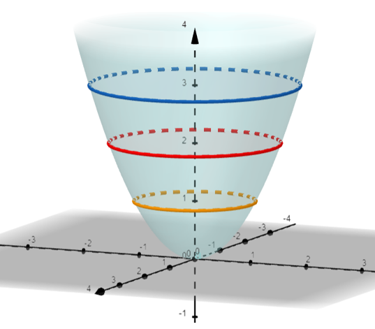
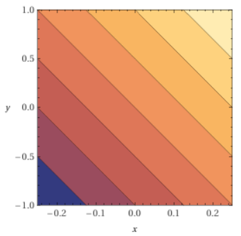
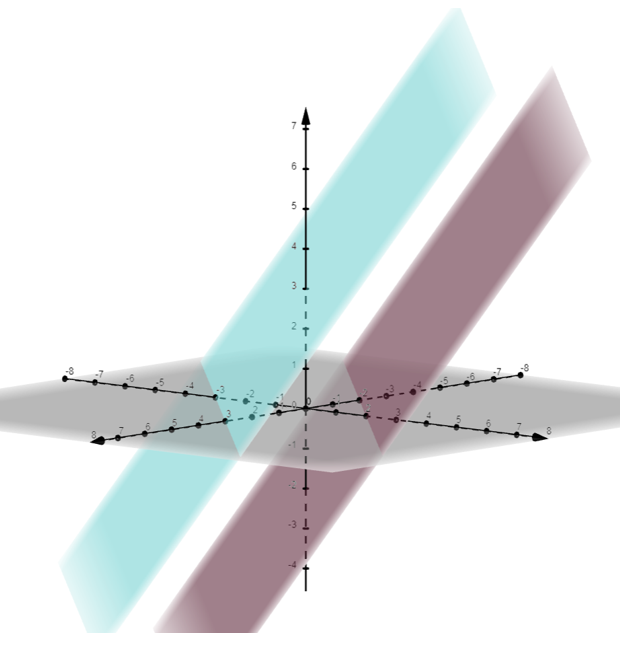

Lesson 16: Level Curves and Level Surfaces
Consider the graph of a function of two variables, \(z = f(x, y)\). This results in a surface in three-dimensional space. A level curve is a two-dimensional curve on the surface with a constant height, resulting from a fixed value of \(z\). Sometimes these are also called contour curves.
An Example
Consider the function of two variables below. Its graph is a quadric surface called a paraboloid, illustrated in the figure.

The equations below determine level curves. Each is a circle where the surface has a constant height, or level.
A Sample Homework Problem
Consider a function \(T(x, y)\) that gives the temperature \(T\) at each point in the \(xy\)-plane. A level curve, or contour curve, results from setting the function equal to a constant \(C\).
The graph of this equation is a level curve. It is the curve passing through all points where the temperature is \(C\). Assume the temperature function is given below.
Which of the following best describes the level curves?
Set the function equal to a constant, and solve for y.
Each level curve is a line with slope \(-4\). Lines with slope \(m = -4\).
The color-coded plot below shows the temperature. Each band of color is between two of these parallel lines.

Consider a function of three variables, \(f(x, y, z)\). Its graph would be a four-dimensional figure, which cannot be visualized in space. A level surface is the three-dimensional surface that results from setting the function equal to a fixed value \(C\).
An Example
Suppose the temperature of the air throughout a tank, in degrees Celsius, is described by the function below.
In this scenario, a level surface is the three-dimensional surface with a fixed temperature. For example, the equations below describe the planes of air with temperatures of \(2^\circ\mathrm{C}\) and \(-3^\circ\mathrm{C}\).

A Sample Homework Problem
Consider a function \(T(x, y, z)\) that gives the temperature \(T\) at each point \((x, y, z)\) in space. A level surface results from setting the function equal to a constant \(C\). It is the surface where all points have temperature \(C\). Assume the temperature function is given below.
Which of the following best describes the level surfaces, for a positive temperature \(C\)?
Set the function equal to \(C\), and divide both sides by \(-C\) to match a standard form.
For \(C > 0\), this matches the form of a hyperboloid of two sheets, which equals \(-1\). Hyperboloid of Two Sheets.
The shape depends on the sign of \(C\). For \(C < 0\), the right side becomes \(+1\), and each level surface is a hyperboloid of one sheet. For \(C = 0\), the level surface is an elliptic cone.